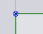

Modifying Laser Part
After creating part in sketch mode, use the workflow to select laser tech or use shortcut key L. The part will be tooled. Select the part to preview of the approach path is shown while moving it. If the approach is being moved to a tight corner, user can see that the approach is being shortened. Further, if the traverse-lines view is on, one can also see that the routing will be dynamically updated as the user is moving the approach.
Example: If the user is moving approach point to the opposite side of the hole, a head-down reposition to the next cut could change to a head-up reposition.
Pierce
Allows you to choose the pierce type.
Possible pierce types vary from machine to machine. Depending on the
selection of pierce type, the marker drawn to indicate pierce point in
the editor will change.
Length & Radius
The following illustrations
will clarify its meaning in different circumstances. Note that with
fixed length, increasing the radius would shorten the straight segment
of approach geometry.
Angle
Whether for
approach or for escape, a greater angle would imply that the laser head
must make a sharper turn.

Contour
Selecting all tooling on the current polyline and provides a special panel using which actions on the contour (inner or outer) can be performed as a whole.
For example, microjoints on the contour or chute conditions could be assigned from the 'Contour' panel.
Selection buttons at the bottom allows you to select similar or all laser cuts. Cuts are considered similar if they start and end at congruent points on identical polylines.
Corner Treatment
| Corner treatment option is available only after tooling a Laser Part. |
Click on in the CutCAM mode on a corner and select Corner Treatment.
Once a part is imported and clean up of the part is complete, the part is ready to be tooled. Once tooled, modification of the corner treatment of the part can be done by the user. Selecting a corner of the part will display the Corner Treatment dialogue.
Auto Compute - This option automatically computes the best suited treatment for the selected corner.
Treatment - This displays a drop-down menu to which corner treatment is desired.
| Treatment | Explanation | Example |
|---|---|---|
Do Nothing |
No corner processing performed. |
|
Rounding |
Rounds off at the corners. |
|
Looping |
Loops at the corners. |
|
Dwell |
Dwells at the corners. |
 |
Cool |
Cools down the laser at the corners. |
|
Stop |
Stops at the corner. |
|
Slowdown |
Slows down the laser at the corners. |


Radius - This will sets a radius for the selected corner.
|
Click and hold Ctrl key and scroll the mouse wheel for coarse increment. Click and hold Shift key and scroll the mouse wheel for fine increment. |
Similar on this contour - This option will select all similar corners on the selected contour.
All on this contour - This option will select all corners on the selected contour.
Similar on all contours - This option will select all similar corners on all contours.